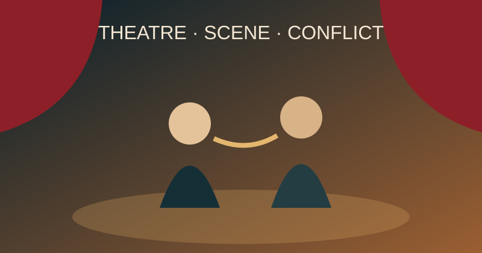

الكتابة .. رؤية أعمق
من الفكرة إلى النص، ومن النص إلى عالم يلمس الآخرين. منصة تعليمية متخصصة في كتابة السيناريو والنصوص الدرامية.
📖
مرجع دائممقالات وأدوات وموارد
✦
تعلّم من الخبرةمحتوى متخصص ومنظم
▣
محتوى احترافيدروس عملية وأمثلة تحليلية
♙
مجتمع تعليميمساحة للمهتمين بفن الكتابة
الدورات التدريبية
رحلة معرفية متكاملة في عالم كتابة السيناريو والنصوص الدرامية
المكتبة المعرفية
مفاهيم وأدوات تساعدك على فهم الكتابة الدرامية
الصراعالقوة التي تدفع الحدث إلى الأمام
المعالجةصياغة الحكاية قبل كتابة المشاهد
الشخصيةالرغبة والعائق والتحول
الحوارالفعل والمعنى الضمني والصمت
أمثلة تحليلية
تطبيق المفاهيم على نماذج تعليمية دون إعادة نشر محتوى محمي
مقالات ومقتطفات
قراءات قصيرة ومتخصصة في الأدب والنقد والكتابة الدرامية
«كل نص جيد يبدأ من إنسان يلاحظ العالم بشكل مختلف»
د. نورة العتال
انضم إلى مجتمع الكتابة
اشترك ليصلك جديد الدورات والمقالات